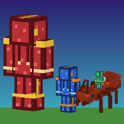
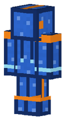
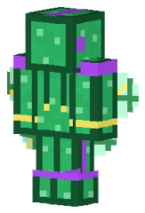
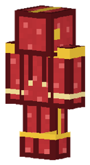
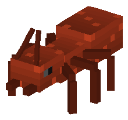
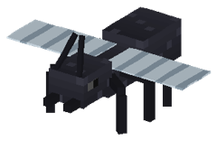

Bender Tiny Titans
A Minecraft add-on with 3 size suits. Shrink tiny to ride ants and squeeze through cracks, grow giant to throw monsters and STOMP, and dive into the glowing Micro Realm.
⬇️ Download for Minecraft
Version 1.0.0. Made for Michael and James. For Minecraft Bedrock on iPad, iPhone, Android and Windows. Free, no ads.
Needs Minecraft 1.26.60 or newer. Update Minecraft first if it won't load.
How to put it on the iPad
- Tap Download for Minecraft above, then tap Download when Safari asks.
- Open the Files app, go to Downloads, and tap BenderTinyTitans.mcaddon. Minecraft opens and says Successfully imported.
If tapping the file doesn't open Minecraft, tap the Share button and choose Minecraft.
- In Minecraft, tap Create New World (or the pencil next to an old world). Scroll to Behavior Packs, tap Available, tap Bender Tiny Titans v1.0.0, then Activate. It works alongside the other Bender add-ons.
- Tap Create or Play. The first time you join, you pick your size suit. You're wearing it straight away, and you also get a Size Switch, Size Discs and an Ant Colony.
Updating from an older version?
Minecraft keeps old copies next to new ones. The new one has its version in the name: Bender Tiny Titans v1.0.0.
- Download and import the new version as above.
- In Minecraft, go to Settings → Storage. Under Behavior Packs, delete the old Bender Tiny Titans copies (the ones without v1.0.0). Under Resource Packs, delete the old Bender Tiny Titans Textures copies.
- Open each world's settings and check Behavior Packs → Active. If it still shows an old copy, remove it and activate v1.0.0. When you join the world, the chat says which version is on.
The 3 size suits
Wear all 4 pieces of one suit, then use the Size Switch. You can swap suits any time in the Size Switch menu.

Pocket Suit
Tiny punches hit like a giant
Shrink and grow. Super fast when tiny.
¼tiny1normal2½×giant

Firefly Suit
Flies when tiny!
Its punches zap a sting that jumps to the next monsters.
⅕tiny1normal1½×giant

Mega Suit
The biggest giant
Huge stomps and the farthest throws.
½tiny1normal4×giant
The Size Switch
Hold it and tap. Where you look picks what happens.
👀Look ahead + tap: shrink tiny. Tap again to go back to normal size.
⬆️Look up + tap: grow giant. Look up and tap again to go back to normal.
⬇️Look down + tap (when you're tiny): dive into the Micro Realm.
🕹️Sneak + tap: the menu. Pick a size, the camera, call your ants, swap suits, or read how to play.
Tiny and giant powers
- Tiny: you're quick and you fit through tiny gaps. When you're tiny or giant, the camera follows you from just behind so you can see yourself. Prefer your own eyes? Change it in the menu.
- Firefly wings (tiny Firefly Suit): hold jump to fly up, push forward to zoom, let go to glide down, sneak to dive.
- Giant: punch a monster to grab it, lift it up... and THROW it where you're looking. Look up to throw it higher!
- STOMP: giants jump high. Land from a jump and the ground shakes, knocking monsters flying. Giants never get hurt by falling.
- Grow back from tiny only where there's room. Under a low roof, walk out into the open first.
Size Discs
Throw them like snowballs. Each one makes a mob one size smaller or bigger: tiny, normal, giant.
- A Shrink Disc (blue) shrinks it. A Grow Disc (red) grows it. Two Grow Discs make a normal mob giant... a giant chicken!
- They work on zombies, skeletons, creepers, spiders, pigs, cows, sheep, chickens and ants. Never on players or babies.
- A disc that misses lands on the ground: pick it up and throw it again.
Ants to ride

Worker Ant
Ride it on the ground
Follows you and bites monsters.

Flying Ant
Ride it in the sky
Look where to go and push forward. Hold jump to climb.
- Tap the Ant Colony and out come 2 worker ants and a flying ant. They're yours and follow you. (After a minute, tap again for more, up to 6.)
- Shrink tiny, then tap an ant to climb on. Sneak to get off.
- Too big? Throw a Grow Disc at an ant to make it giant, and anyone can ride it, even a normal-size player.
- Ants far away? Sneak + tap the Ant Colony and they come to you.
The Micro Realm
- Shrink tiny, look down and tap the Size Switch. You dive into a glowing world of floating islands.
- Hop along the light bridges to the islands. Tap the shiny Micro Crystal clusters to collect crystals. They grow back.
- You float gently in there, and if you fall off, the realm catches you.
- To go home, tap the Size Switch again, or step on the swirling portal in the middle. You go back to exactly where you left.
How to craft more
All the recipes are in the crafting table's recipe book.
- Suit pieces: shaped like iron armor, with the suit's item in the middle and a gold nugget in a corner. Pocket: lapis lazuli. Firefly: feather. Mega: redstone.
- Size Switch: redstone on top, iron, lapis, iron in the middle, iron at the bottom
- Shrink Discs (×4): 4 iron nuggets around lapis lazuli
- Grow Discs (×4): 4 iron nuggets around redstone
- 8 discs from a Micro Crystal: a crystal on top of lapis (shrink) or redstone (grow)
- Ant Colony: sugar on top of 3 dirt
Good to know
- Powers only hurt monsters: never players, pets, animals or your ants.
- This add-on gives the player and 8 mobs (zombie, skeleton, creeper, spider, pig, cow, sheep, chicken) their sizes. Another add-on that also changes the player or those mobs can clash with it. The other Bender add-ons are fine.
- Take the suit off and you go back to normal size, as soon as there's room.
- Ants never get hurt by players or by falling. Feed them sugar to heal them.
- Worlds with add-ons don't earn Xbox achievements.